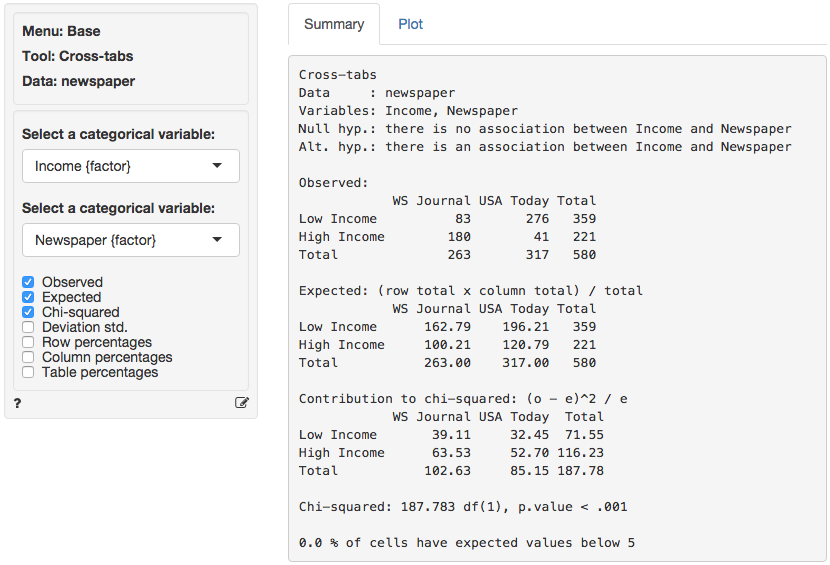
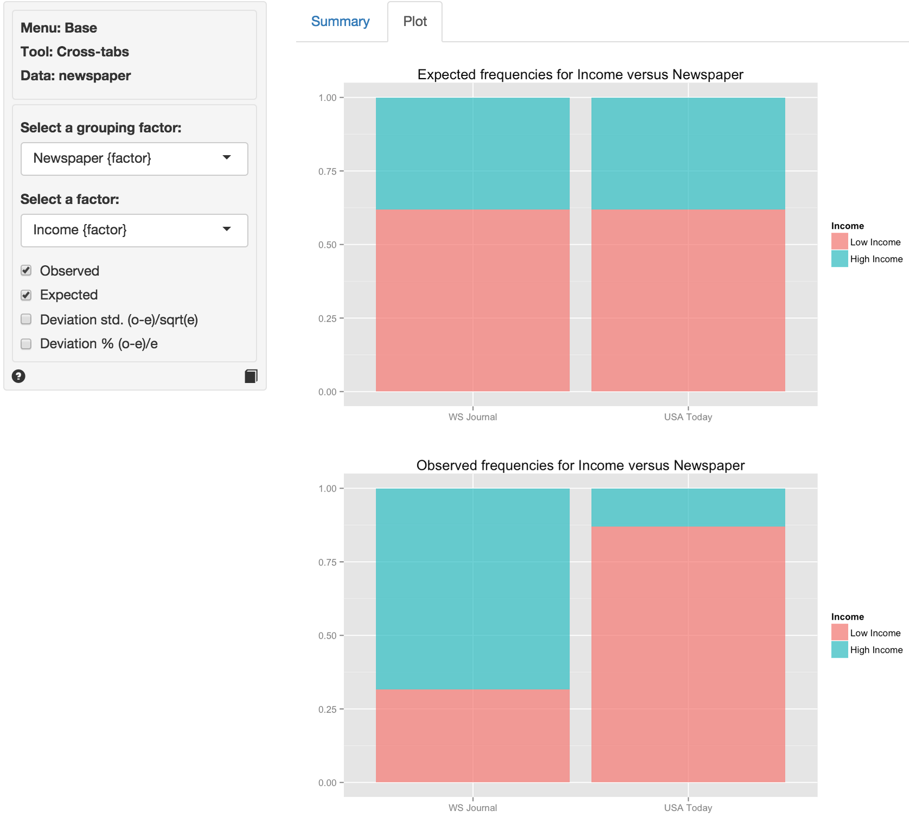

Base > Cross-tabs
Cross-tab analysis is used to evaluate if categorical variables are associated. This tool is also known as chi-square or contingency table analysis
Example
The data are from a sample of 580 newspaper readers that indicated (1) which newspaper they read most frequently (USA today or Wall Street Journal) and (2) their level of income (Low income vs. High income). The data has three variables: A respondent identifier (id), respondent income (High or Low), and the primary newspaper the respondent reads (USA today or Wall Street Journal).
We will examine if there is a relationship between income level and choice of newspaper. In particular, we test the following null and alternative hypotheses:
- H0: There is no relationship between income level and newspaper choice
- Ha: There is a relationship between income level and newspaper choice
If the null-hypothesis is rejected we can investigate which cell(s) contribute to the hypothesized association. In Radiant (Base > Cross-tab) choose Income as the first factor and Newspaper as the second factor. First, compare the observed and expected frequencies. The expected frequencies are calculated using H0 (i.e., no association) as (Row total x Column Total) / Overall Total.

The (Pearson) chi-squared test evaluates if we can reject the null-hypothesis that the two variables are independent. It does so by comparing the observed frequencies (i.e., what we actually see in the data) to the expected frequencies (i.e., what we would expect to see if the two variables were independent). If there are big differences between the table of expected and observed frequencies the chi-square value will be large. The chi-square value for each cell is calculated as (o - e)^2 / e, where o is the observed frequency in a cell and e is the expected frequency in that cell if the null hypothesis holds. These values can be shown by clicking the Chi-squared check box. The overall chi-square value is obtained by summing across all cells, i.e., it is the sum of the values shown in the Contribution to chi-square table.
In order to determine if the chi-square value can be considered large we first determine the degrees of freedom (df). In particular: df = (# rows - 1) x (# columns - 1). In a 2x2 table, we have (2-1) x (2-1) = 1 df. The output in the Summary tab shows the value of the chi-square statistic, the associated df, and the p-value associated with the test. We also see the contribution from each cells to the overall chi-square statistic.
Remember to check the expected values: All expected frequencies are larger than 5 therefore the p.value for the chi-square statistic is unlikely to be biased. As usual we reject the null-hypothesis when the p-value is smaller 0.05. Since our p-value is very small (< .001) we can reject the null-hypothesis (i.e., the data suggest there is an association between newspaper readership and income).
We can use the provided p.value associated with the Chi-squared value of 187.783 to evaluate the null hypothesis. However, we can also calculate the critical Chi-squared value using the probability calculator. As we can see from the output below that value is 3.841 if we choose a 95% confidence level. Because the calculated Chi-square value is larger than the critical value (187.783 > 3.841) we reject null hypothesis that Income and Newspaper are independent.

We can also use the probability calculator to determine the p.value associated with the calculated Chi-square value. Consistent with the output from the Cross-tabs > Summary tab this p.value is < .001.

In addition to the numerical output provided in the Summary tab we can evaluate the hypothesis visually (see Plots). We choose the same variables as before. However, we will plot the standardized deviations. This measure is calculated as (o-e)/sqrt(e), i.e., a score of how different the observed and expected frequencies in one cell in our table are. When a cell’s standardized deviation is greater than 1.96 (in absolute value) the cell has a significant deviation from the model of independence (or no association).

In the plot we see that all cells contribute to the association between income and readership as all standardized deviations are larger than 1.96 in absolute value (i.e., the bars extend beyond the outer dotted line in the plot).
In other words, there seem to be fewer low income respondents that read WSJ and more high income respondents that read WSJ than would be expected if the null hypothesis of no-association were true. Furthermore, there are more low income respondents that read USA today and fewer high income respondents that read USA Today than would be expected if the null hypothesis of no-association were true.
Technical note
When one or more expected values are small (e.g., 5 or less) the p.value for the Chi-squared test is calculated using simulation methods. If some cells have an expected count below 1 it may be necessary to collapse rows and/or columns. The description for the goals2 dataset that is part of the examples bundled with Radiant has instructions on how rows or columns in a cross-tab can be collapsed when some of the expected values are low.